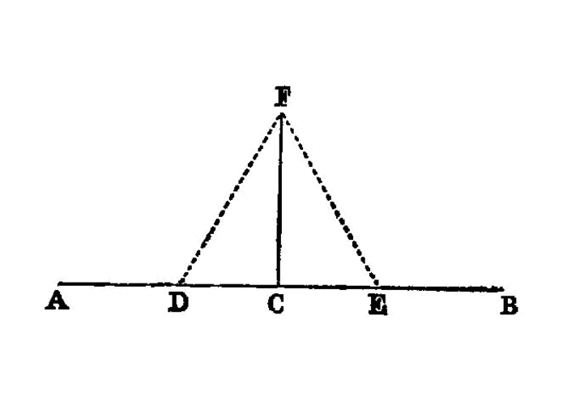

construct perpendicular from point on line
I.11
To draw a straight line at right angles to a given straight line from a given point on it.
—Euclid
{kind=link}
Let AB be the given straight line, and C the given point on it.
PROBLEM: draw from the point C a straight line at right angles to the straight line AB.
Let a point D be taken at random on AC; [1] let CE be made equal to CD; [I.3] on DE let the equilateral triangle FDE be constructed, [I.1] and let FC be joined;
I say that the straight line FC has been drawn at right angles to the given straight line AB from C the given point on it.
For, since DC is equal to CE, and CF is common,
the two sides DC, CF are equal to the two sides EC, CF respectively;
and the base DF is equal to the base FE;
therefore the angle DCF is equal to the angle ECF; [I.8]
and they are adjacent angles.
But, when a straight line set up on a straight line makes the adjacent angles equal to one another, each of the equal angles is right; [I.def.10]
therefore each of the angles DCF, FCE is right.
Therefore the straight line CF has been drawn at right angles to the given straight line AB from the given point C on it.
references
[I.def.10]: /elem.1.def.10 “Book I - Definition 10” [I.1]: /elem.1.1 “Book I - Proposition 1” [I.3]: /elem.1.3 “Book I - Proposition 3” [I.8]: /elem.1.8 “Book I - Proposition 8”